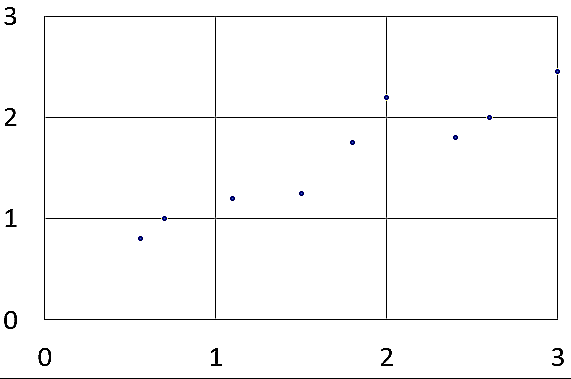
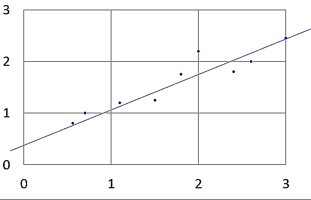
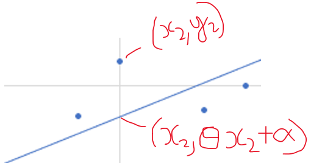
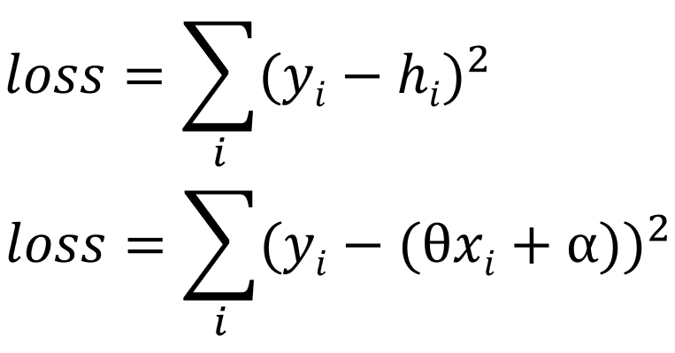
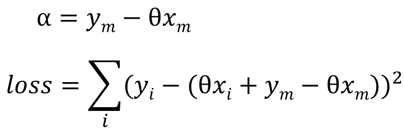
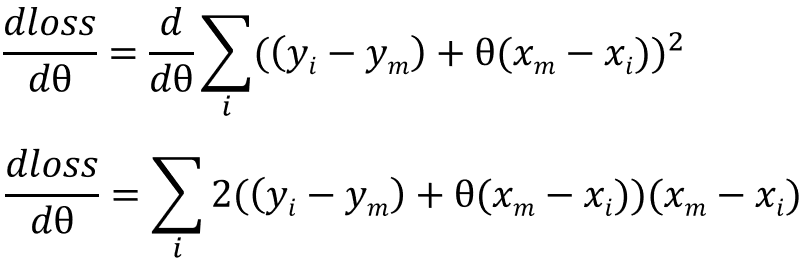
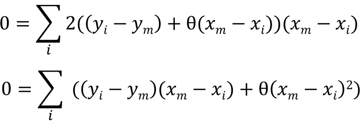
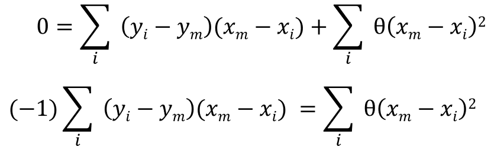
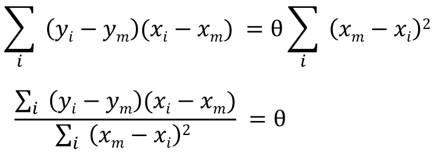
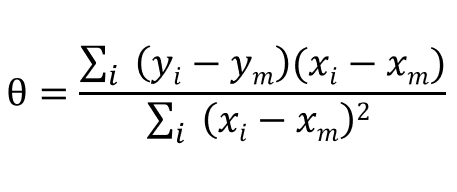

Lets say we are given some x values with their associated y values:
We can take a guess at what the best fit line could look like:
Let yi be the output with xi, and let hi be the predicted output (= (θ * xi) + α, where θ is the gradient of the best fit line and α is the bias).
We will introduce another variable: loss, which is the sum of (yi - hi)2.
The smaller the difference between yi and hi, the smaller the value of loss. Our goal is to find the θ which will give the smallest possible value for loss. We can start by differentiating the loss with respect to θ, but before we do that, we must first expand α:
In the above equation, ym represents the mean y value, and xm represents the mean x value. The line of best fit is expected to pass through (xm, ym), meaning ym = θxm + α. Now lets differentiate the loss:
With different values of θ, we get different values of loss. The loss function (with respect to θ) is a parabola, and to find the global minimum, we can set the gradient to 0.
We can simplify this:
Now lets make θ the subject:
This will give us the regression coefficient:
